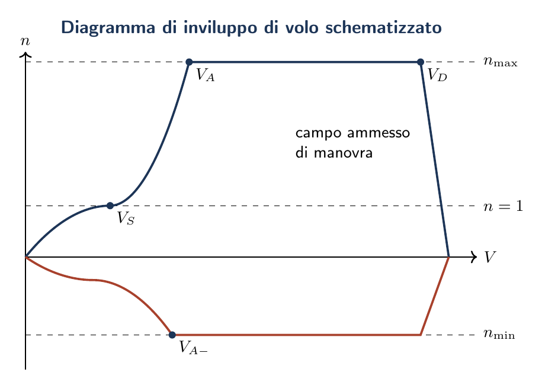

Esame di Stato 2019
Inviluppo di volo · Impianto combustibile · Sollecitazione longherone · CND magnetoscopico
La prova della sessione ordinaria 2019 combina un quesito semi-numerico (il diagramma di inviluppo di volo), un quesito impiantistico (impianto combustibile), un quesito strutturale numerico (sollecitazione del longherone in condizione di g-stallo) e un quesito di tecnica delle prove non distruttive (CND magnetoscopico). Per i quesiti 1 e 3, che fanno riferimento al velivolo della Prima Parte, si adottano i dati di un velivolo da turismo monomotore MTOW = 1100 kg, categgoria Normal CS-23, coerente con i velivoli di riferimento dei capitoli precedenti.
Diagramma di inviluppo di volo
Dati di riferimento e fattori di carico (CS-23, categoria Normal)
Velocità caratteristiche
Velocità di stallo.
$$V_S = \sqrt{\frac{2\,W}{\rho_0\,S\,C_{L,\max}}} = \sqrt{\frac{2 \times 10\,791}{1{,}225 \times 16 \times 1{,}60}} = \mathbf{26{,}2\,\mathrm{m/s}} \;(94{,}4\,\mathrm{km/h})$$ $$V_{SR} = \sqrt{\frac{2\,W}{\rho_0\,S\,|C_{L,\min}|}} = \sqrt{\frac{2 \times 10\,791}{1{,}225 \times 16 \times 0{,}60}} = \mathbf{42{,}8\,\mathrm{m/s}} \;(154\,\mathrm{km/h})$$Velocità di manovra.
$$V_A = V_S\sqrt{n_{\lim}} = 26{,}2 \times \sqrt{3{,}8} = \mathbf{51{,}1\,\mathrm{m/s}} \;(184\,\mathrm{km/h})$$ $$V_{AR} = V_{SR}\sqrt{|n_{\lim,R}|} = 42{,}8 \times \sqrt{1{,}52} = \mathbf{52{,}8\,\mathrm{m/s}} \;(190\,\mathrm{km/h})$$Velocità di crociera e di picchiata.
Per la categoria Normal CS-23 si adotta: $$V_C = 2{,}0 \times V_S = 52{,}5\,\mathrm{m/s}\;(189\,\mathrm{km/h}), \qquad V_D = 1{,}5 \times V_C = 78{,}7\,\mathrm{m/s}\;(283\,\mathrm{km/h})$$Diagramma di manovra
Il diagramma si costruisce tracciando le parabole di stallo e i tratti a $n$ costante:
| $n$ | $V\,[\mathrm{m/s}]$ | $V\,[\mathrm{km/h}]$ | Tratto | Note |
| 1{,}00 | 26{,}2 | 94 | Parabola S–A | stallo volo diretto |
| 1{,}50 | 32{,}1 | 116 | ||
| 2{,}50 | 41{,}5 | 149 | ||
| 3{,}50 | 49{,}1 | 177 | ||
| 3{,}80 | 51{,}1 | 184 | punto A | |
| 3{,}80 | 51{,}1 | 184 | A–C | |
| 3{,}80 | 52{,}5 | 189 | A–C | punto C = $(V_C, n_{\lim})$ |
| 3{,}80 | 78{,}7 | 283 | C–D | punto D = $(V_D, n_{\lim})$ |
| 0{,}00 | 78{,}7 | 283 | D–E | $n$ decresce a 0 (Norm.) |
| $-1{,}00$ | 42{,}8 | 154 | Parabola $S_R$–$A_R$ | stallo rovescio |
| $-1{,}52$ | 52{,}8 | 190 | punto $A_R$ | |
| $-1{,}52$ | 42{,}8 | 154 | $A_R$–F | $n_{\lim,R} = -1{,}52$ fino a $V_C$ |
| 0{,}00 | 78{,}7 | 283 | F–E | decresce linearmente |
Diagramma di raffica (CS-23)
Il fattore di carico da raffica vale (formula CS-23): $$n_{\mathrm{raff}} = 1 \pm \frac{K_g\,\rho_0\,U_{de}\,V\,a}{2\,(W/S)}$$ dove $K_g \approx 0{,}88\,\mu_g/(5{,}3 + \mu_g)$ è il fattore di attenuazione e $a = C'_L$. Le velocità di raffica standard a SL sono: $U_{de} = 15{,}2\,\mathrm{m/s}$ a $V_C$ e $U_{de} = 7{,}6\,\mathrm{m/s}$ a $V_D$. Le linee di raffica sono rette che passano per $(V = 0,\, n = 1)$ con pendenza proporzionale a $U_{de}$.

Impianto combustibile del velivolo
Circuito del velivolo
Serbatoi.
I serbatoi sono il deposito primario di combustibile. La loro posizione influisce sull'equilibrio del baricentro: sui velivoli leggeri sono tipicamente alloggiati nelle ali (wet wing o serbatoi integrali), con vantaggi strutturali (il peso del carburante bilancia il momento flettente aerodinamico). Sui velivoli di linea si trovano serbatoi alari, centrali e di coda (per il controllo del baricentro).Caratteristiche costruttive:
- pareti impermeabilizzate con sigillante polisolturico resistente al kerosene;
- fori di drenaggio (drain valves) per eliminare l'acqua condensata sul fondo;
- diaframmi interni (baffles) che smorzano il movimento del carburante nelle manovre, evitando scoprimento delle pompe;
- sistema di sfiato (venting): i serbatoi comunicano con l'esterno per compensare la variazione di volume del carburante con la temperatura e la quota, evitando pressioni differenziali pericolose.
Pompe di alimentazione.
- Pompe centrifughe immerse (boost pumps):
- elettropompe centrifughe installate direttamente nel serbatoio, immerse nel combustibile. Preriscaldano il carburante e garantiscono la pressione positiva all'ingresso della pompa motore (prevenzione della vaporizzazione). Su motori a pistoni una sola pompa elettrica è sufficiente; sui turbomotori ne sono installate due per serbatoio (principale + riserva).
- Pompa meccanica del motore:
- azionata direttamente dall'albero motore, determina la portata effettiva al carburatore o all'iniettore.
- Alimentazione per gravità (solo monomotori leggeri):
- se il serbatoio è fisicamente più alto del carburatore, la gravità è sufficiente; non richiede pompe elettriche. Limite: l'alimentazione si interrompe in assetti negativi.
Rete di distribuzione.
Comprende: tubazioni di mandata (dall'elettropompa al motore), tubazione di cross-feed (alimentazione incrociata, consente a qualsiasi serbatoio di rifornire qualsiasi motore), valvola di shut-off motore (sulla paratia antifiamma: esclude il carburante al motore in caso di incendio), filtri (rimozione di particelle e acqua libera), separatori di vapori (evitano la vapour lock).Indicatori e monitoraggio.
- Indicatori di livello: a galleggiante (potenziometrico) o a misura capacitiva (più precisi, misurano la massa tramite dielettrico del fluido).
- Flussometri: misurano il consumo orario in tempo reale.
- Indicatori di pressione alla pompa e al motore.
Circuito del motore
Il carburante entra nel motore alla pressione erogata dal boost pump e viene ulteriormente pressurizzato dalla pompa ad alta pressione (high pressure fuel pump) prima dell'iniezione. Il regolatore di carburante (FCU — Fuel Control Unit o FADEC nei motori moderni) dosa la portata in funzione del regime motore, dell'incidenza dell'elica, della quota e della temperatura. Il carburante in eccesso viene ricircolato al serbatoio tramite la linea di ritorno, riportando il calore ceduto dalla pompa HP nel serbatoio (nota: nei turbofan moderni il carburante è usato anche come fluido refrigerante per l'olio motore).
Sicurezza e normativa
Aspetti critici per la sicurezza dell'impianto combustibile:
- Inerting (inertizzazione): nei serbatoi grandi, l'azoto sostituisce i vapori di carburante sopra il livello del liquido, eliminando il rischio di esplosione. Obbligatorio sui grandi trasporti (Boeing 787, A380).
- Fuel jettison (scarico rapido): sui velivoli con MTOW$_{\mathrm{ldg}}$ $<$ MTOW$_{\mathrm{TO}}$, un sistema di scarico rapido consente di alleggerire l'aeromobile prima di un atterraggio d'emergenza.
- Combustibili: motori a pistone usano Avgas 100LL; turbomotori usano Jet-A (Avtur) o JP-8 in ambito militare.
Sollecitazione del longherone in condizione di g-stallo a \texorpdfstring{$1{,}3\,V_S$
{1.3 Vs}}Carichi strutturali
La portanza totale in questa condizione vale: $$L = n \cdot W = 1{,}69 \times 10\,791 = 18\,237\,\mathrm{N}$$ Per simetria, ciascuna semiala regge la metà: $$L_{\mathrm{semi}} = L/2 = 9\,118\,\mathrm{N}$$
Distribuzione del carico.
Si adotta l'ipotesi di distribuzione uniforme del carico aerodinamico lungo la semiala (ipotesi conservativa e ammissibile per ala rettangolare a bassa rastremazione): $$q = \frac{L_{\mathrm{semi}}}{b/2} = \frac{9\,118}{5{,}48} = 1\,664\,\mathrm{N/m} \quad\left(b = \sqrt{\AR \cdot S} = \sqrt{7{,}5 \times 16} = 10{,}95\,\mathrm{m}\right)$$Taglio e momento flettente all'incastro (radice)
- Taglio massimo $T$:
- il taglio è massimo alla radice ed è uguale alla portanza totale della semiala: $$T = L_{\mathrm{semi}} = \mathbf{9\,118\,\mathrm{N}} \label{eq:2019_taglio}$$
- Momento flettente massimo $M_f$:
- con distribuzione uniforme, il momento all'incastro è: $$M_f = q \cdot \frac{(b/2)^2}{2} = 1\,664 \times \frac{(5{,}48)^2}{2} = \mathbf{24\,970\,\mathrm{N{\cdot}m}} \label{eq:2019_momento}$$
Tensioni nella sezione di radice
Il longherone anteriore assorbe la quota principale del momento flettente. Assumendo per il profilo NACA 2412 un'altezza al 25% della corda pari a $h \approx 0{,}12\,c = 0{,}12 \times (S/b) = 0{,}12 \times 1{,}46 = 0{,}175\,\mathrm{m}$ e una sezione rettangolare di larghezza $b_s$ da determinare:
Tensione di flessione (verifica).
Il modulo resistente richiesto per $\sigma_{\mathrm{amm}} = 60\,\mathrm{N/mm}^2$ (legno) o $100\,\mathrm{N/mm}^2$ (composito) è: $$\begin{aligned}W_s = \frac{M_f}{\sigma_{\mathrm{amm}}} \quad\Rightarrow\quad b_s = \frac{6\,M_f}{\sigma_{\mathrm{amm}}\,h^2}\end{aligned}$$ Per legno ($\sigma = 60\,\mathrm{N/mm}^2$, $h = 175\,\mathrm{mm}$): $$b_s = \frac{6 \times 24{,}970 \times 10^6}{60 \times 175^2} = 81{,}4\,\mathrm{mm}$$CND magnetoscopico: procedura di applicazione
Principio fisico
Un materiale ferromagnetico sottoposto a un campo magnetico esterno $\mathbf{H}$ si magnetizza sviluppando un flusso magnetico $\mathbf{B} = \mu_r \mu_0 \mathbf{H}$. Dove il materiale è continuo e omogeneo, le linee di flusso scorrono indisturbate. In presenza di un difetto (cricca, vuoto, inclusione non ferromagnetica) il flusso deve aggirare la discontinuità: poiché la permeabilità del difetto è molto inferiore a quella del metallo, le linee di flusso emergono nella superficie del pezzo ai bordi del difetto, formando dei poli locali (flux leakage). Le particelle magnetiche applicate vengono attratte verso questi poli per il gradiente di campo e si addensano a formare un'indicazione visibile del difetto.
Classificazione dei difetti rilevabili
- Difetti superficiali: rilevati con la massima sensibilità; anche cricche molto strette ($< 1\,\mu\mathrm{m}$ di apertura) producono indicazioni chiare.
- Difetti subsuperficiali: rilevabili fino a $\sim\!6$–$8\,\mathrm{mm}$ di profondità (con campo magnetico continuo); la sensibilità diminuisce con la profondità.
- Non rilevabili: difetti molto profondi, difetti paralleli alle linee di forza del campo (il campo deve essere approssimativamente perpendicolare al difetto per generare il massimo flux leakage).
Procedura di ispezione
La procedura si articola in sei fasi standard (EN ISO 9934-1, AMS 2641):
- Pulizia e preparazione della superficie. Rimozione di grasso, vernice, ossidazioni superficiali con solvente o spazzolatura. La superficie deve essere pulita per consentire una buona visibilità delle indicazioni. Su superfici scure si applica uno strato sottile ($15$–$25\,\mu\mathrm{m}$) di vernice bianca (contrast aid paint) che aumenta il contrasto delle particelle magnetiche nere.
- Magnetizzazione del pezzo.
Il campo magnetico viene indotto nel componente con uno dei seguenti metodi:
- Applicazione delle particelle magnetiche.
- Ispezione e interpretazione.
La superficie è esaminata visivamente:
- sotto luce UV (360–400 nm, lampada Wood) per indicazioni fluorescenti; ambiente oscurato obbligatorio (illuminazione $< 20\,\mathrm{lux}$, irradianza UV $> 1000\,\mu\mathrm{W/cm}^2$);
- sotto luce bianca ($> 500\,\mathrm{lux}$) per particelle colorate.
- Valutazione e documentazione. Le indicazioni rilevanti sono misurate (lunghezza, orientamento, posizione) e confrontate con i criteri di accettazione del manuale tecnico applicabile (AMM, SRM, MIL-STD-1907). La documentazione fotografica è obbligatoria per le indicazioni borderline. Il pezzo è dichiarato conforme, da riparare o da sostituire.
- Smagnetizzazione e pulizia finale. Dopo l'ispezione il pezzo deve essere demagnetizzato con una bobina alimentata da corrente alternata decrescente (o passando il pezzo attraverso una bobina di AC allontanandolo progressivamente). Un campo residuo superiore a $0{,}3\,\mathrm{mT}$ (EN ISO 9934-1) può disturbare strumenti di bordo o attrarre trucioli durante le lavorazioni. La superficie viene infine pulita per rimuovere i residui delle particelle.
| Metodo CND | Difetti rilevabili | Materiali |
| Magnetoscopico (MT) | Superficiali + subsuperficiali | Solo ferromagnetici |
| Liquidi penetranti (PT) | Solo superficiali aperti | Tutti i non porosi |
| Ultrasuoni (UT) | Superficiali + profondi | Quasi tutti |
| Correnti indotte (ET) | Superficiali + sub-sup. | Conduttori elettrici |
| Radiografia (RT) | Volumetrici + superficiali | Quasi tutti |